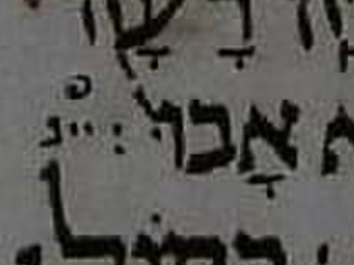
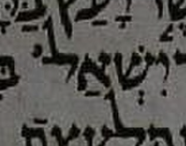
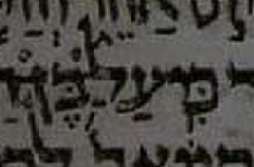
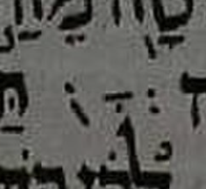

Features of interest · Interesting ketiv/qere cases · NAEE book links
Qere without ketiv has no written letters for the qere. The space and marks at the manuscript site can nevertheless differ. The verses below show the current near-Aleppo example edition (NAEE); the MAM notes and the recorded Aleppo image readings have their own labels. Image readings are attributed to Ben Denckla.
וְעַתָּ֡ה תְּנוּ֩ אֶת־הָאֲנָשִׁ֨ים בְּנֵי־בְלִיַּ֜עַל אֲשֶׁ֤ר בַּגִּבְעָה֙ וּנְמִיתֵ֔ם וּנְבַעֲרָ֥ה רָעָ֖ה מִיִּשְׂרָאֵ֑ל וְלֹ֤א אָבוּ֙ [אין כתיב] בִנְיָמִ֔ן לִשְׁמֹ֕עַ בְּק֖וֹל אֲחֵיהֶ֥ם בְּנֵי־יִשְׂרָאֵֽל׃
[בְּנֵ֣י]
MAM has no doc-note attached to this qere-without-ketiv site.
The below-marks of בְּנֵ֣י (sheva, tsere, munaḥ) are present without letters, with space above them. No dagesh. The orphan marks are at the end of a manuscript line. The line ending may have provided space for the marks, possibly accidentally.
A masorah circle is above the marks; it is documented but not encoded.
The standalone review's blank SPACE anchors are display conventions, not measurements of manuscript spacing or a proposed template design.

Aleppo Codex — Judges 20:13.
וַעֲצַ֣ת אֲחִיתֹ֗פֶל אֲשֶׁ֤ר יָעַץ֙ בַּיָּמִ֣ים הָהֵ֔ם כַּאֲשֶׁ֥ר יִשְׁאַל־[אין כתיב] בִּדְבַ֣ר הָאֱלֹהִ֑ים כֵּ֚ן כָּל־עֲצַ֣ת אֲחִיתֹ֔פֶל גַּם־לְדָוִ֖ד גַּ֥ם לְאַבְשָׁלֹֽם׃
[אִ֖ישׁ]
The space is fairly generous even after the maqaf, with no pointing for אִ֖ישׁ. There is insufficient room for the letters of איש, but ample room for its below-marks (ḥiriq and tipeḥa). Ben questions whether the description “narrow” in MAM’s note reviewed on 2026-10-08 fits this space.

Aleppo Codex — 2 Samuel 16:23.
וַיֹּ֧אמֶר ל֣וֹ יוֹאָ֗ב לֹא֩ אִ֨ישׁ בְּשֹׂרָ֤ה אַתָּה֙ הַיּ֣וֹם הַזֶּ֔ה וּבִשַּׂרְתָּ֖ בְּי֣וֹם אַחֵ֑ר וְהַיּ֤וֹם הַזֶּה֙ לֹ֣א תְבַשֵּׂ֔ר כִּֽי־עַל־[אין כתיב] בֶּן־הַמֶּ֖לֶךְ מֵֽת׃
[כֵּ֥ן]
The tsere and merkha of כֵּ֥ן are written below, between the surrounding written atoms, without the qere letters or dagesh. There is no space above these marks. Ben agrees with MAM’s note as reviewed on 2026-10-08.

Aleppo Codex — 2 Samuel 18:20.
כִּ֤י מִירוּשָׁלַ͏ִם֙ תֵּצֵ֣א שְׁאֵרִ֔ית וּפְלֵיטָ֖ה מֵהַ֣ר צִיּ֑וֹן קִנְאַ֛ת יְהוָ֥ה [אין כתיב] תַּעֲשֶׂה־זֹּֽאת׃
[צְבָא֖וֹת]
MAM has no doc-note attached to this qere-without-ketiv site.
There is very generous spacing for צְבָא֖וֹת; perhaps the qere letters could have fit. All its below-marks are present (sheva, qamats, and tipeḥa). A ḥolam male dot also seems to be represented.

Aleppo Codex — 2 Kings 19:31.
וַיְהִי֩ ה֨וּא מִֽשְׁתַּחֲוֶ֜ה בֵּ֣ית ׀ נִסְרֹ֣ךְ אֱלֹהָ֗יו וְֽאַדְרַמֶּ֨לֶךְ וְשַׂרְאֶ֤צֶר [אין כתיב] הִכֻּ֣הוּ בַחֶ֔רֶב וְהֵ֥מָּה נִמְלְט֖וּ אֶ֣רֶץ אֲרָרָ֑ט וַיִּמְלֹ֛ךְ אֵסַר־חַדֹּ֥ן בְּנ֖וֹ תַּחְתָּֽיו׃
[בָּנָיו֙]
MAM has no doc-note attached to this qere-without-ketiv site.
An image reading has not yet been recorded for this entry.
הִנֵּ֛ה יָמִ֥ים [אין כתיב] נְאֻם־יְהוָ֑ה וְנִבְנְתָ֤ה הָעִיר֙ לַיהוָ֔ה מִמִּגְדַּ֥ל חֲנַנְאֵ֖ל שַׁ֥עַר הַפִּנָּֽה׃
[בָּאִ֖ים]
An image reading has not yet been recorded for this entry.
הַשְׁמִ֣יעוּ אֶל־בָּבֶ֣ל ׀ רַ֠בִּים כָּל־דֹּ֨רְכֵי קֶ֜שֶׁת חֲנ֧וּ עָלֶ֣יהָ סָבִ֗יב אַל־יְהִי־[אין כתיב] פְּלֵיטָ֔ה שַׁלְּמוּ־לָ֣הּ כְּפָעֳלָ֔הּ כְּכֹ֛ל אֲשֶׁ֥ר עָשְׂתָ֖ה עֲשׂוּ־לָ֑הּ כִּ֧י אֶל־יְהוָ֛ה זָ֖דָה אֶל־קְד֥וֹשׁ יִשְׂרָאֵֽל׃
[לָהּ֙]
An image reading has not yet been recorded for this entry.
וַתֹּ֖אמֶר אֵלֶ֑יהָ כֹּ֛ל אֲשֶׁר־תֹּאמְרִ֥י [אין כתיב] אֶעֱשֶֽׂה׃
[אֵלַ֖י]
An image reading has not yet been recorded for this entry.
וַתֹּ֕אמֶר שֵׁשׁ־הַשְּׂעֹרִ֥ים הָאֵ֖לֶּה נָ֣תַן לִ֑י כִּ֚י אָמַ֣ר [אין כתיב] אַל־תָּב֥וֹאִי רֵיקָ֖ם אֶל־חֲמוֹתֵֽךְ׃
[אֵלַ֔י]
An image reading has not yet been recorded for this entry.